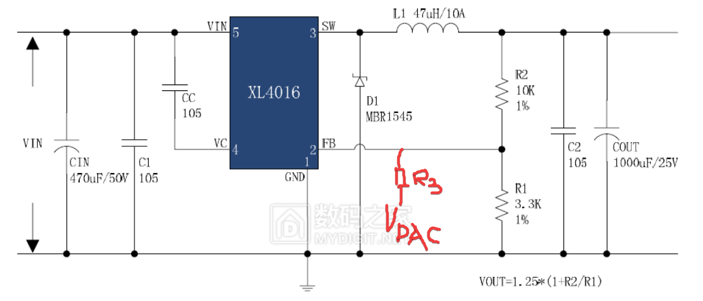

俺最近对数控电源产生了很大的兴趣，因此对数控电源的恒压、恒流模式进行了一定的研究……
0x00 必需知识
模电基础
0x01 数控电源的作用
数控电源可以以一定步进值产生输出电压和输出电流，对于DIY爱好者来说很重要。因此探究数控电源的构成能提升对数控电源运作方式的理解，方便DIY。
0x02 数控电源的构成
比较简单的数控电源都采用BUCK降压电路，一般有两种设计方式。第一种完全使用单片机进行控制，单片机采集输出的ADC值，并经过控制算法，改变输出PWM的占空比，驱动外置mos半桥工作。第二种采用现有的BUCK芯片，只是通过一定的方式接入芯片的FB引脚，以对调压过程进行影响。一般来说，第二种方式的设计更为简单，因为控制及反馈的电路都由芯片公司设计完成，不需要DIYer考虑，而这些部分往往需要很多的设计经验。但是在某些应用中，采用单片机控制也不失为一种很好的方式。例如，在VFD应用中，需要产生一个60~80V的高压，如果不采用变压器方案就需要采用BOOST电路，但是这种高压芯片价格比较昂贵。此时只需要单片机直接控制开关MOS管，采用开环设计。因为VFD的高压是为了形成电场，不消耗很多电流，开环设计已经足够。本篇文章中，俺只打算讨论采用现成BUCK芯片和电路的设计数控电源。
0x01 BUCK电路结构
一个典型的基于XL4016的BUCK电路如图所示。R2和R1构成反馈网络，将输出电压反馈到芯片的FB引脚中。4016的内部框图如下：
可以看到FB引脚进入到一个ErrorAmplifier（误差放大器），与芯片内部的1.25V参考电压进行比较，输出结果与锯齿波进行比较，进而驱动内部MOS改变电路工作状态。对于这个电路来说，最终要达到平衡的条件是，FB引脚的电压等于1.25V，因此可以得到输出电压表达式：$V_{OUT}= V_{FB} *(1+\frac{R_{2} }{R_{1} } )$
0x02 控制电路修改
为使得这个电路可以被单片机控制，需要使用DAC对FB引脚施加控制，采用电路如下所示：

此时输出电压为$(V_{OUT}-V_{FB})/R_{2}+(V_{DAC}-V_{FB})/R_{3} =V_{FB}/R_{1}$ 这个式子使得单片机可以通过DAC控制输出电压。当然，这只是单片机通过DAC控制输出电压的一种方式，此外还有许多可以达到目的的电路。
在这个电路中，$V_{DAC}+V_{fb}=V_{o}$
在这个电路中，$V_{o}=(V_{DAC}-V_{FB})*\frac{R_{4} }{R_{1} } +V_{ref}$
可以看到，DAC接入控制电路的方式多种多样，可以达到的效果也有很多，有的结构可调输出最小电压为FB的参考电压，而有的结构可以从0V开始输出，可以根据需要设计对应的电路。
这种控制方式最终达到的平衡效果是FB引脚的电压等于内部参考电压，还有另外一种控制方式是单纯将FB作为工作开关，进行控制。以基于3R33模块的数控电源电路为例
这个电路实现了恒压恒流，具体实现是将输出电压分压与DAC输出进行比较，运放工作在比较器模式，当输出电压超过控制值时，比较器输出5V，通过一个二极管构成的或门输入ADJ端。此电路已经对3R33模块进行处理
拆除的三个元件分别是一个输出端的稳压管和两个并联的输出反馈电阻上臂，则实际电路变为
当比较器输出5V时，FB脚的分压大致为3.5V，3R33模块使用的芯片是MP2307，它的框图如下所示
可以看到，当FB输入3V时，会触发OVP，整个芯片停机，输出电压就会下降。而当比较器输出0V时，FB脚被下拉到0V，芯片开始工作。由此实现恒压输出，恒流原理类似，只是需要注意要先将采样电阻的电压进行放大。两个二极管构成的或门实现了恒压恒流的功能以及自动切换。但是需要注意的是，当FB脚电压为0V时，内部振荡频率会变成较低的110kHz，从这个角度来看，这种控制方式可能会使得芯片工作效率比较低，也可能带来电感饱和的问题，这个需要使用者注意。
0x03 由PWM产生DAC
不管是哪种方式，都可以看到DAC在这个控制电路中都是不可或缺的一部分，为实现DAC功能，部分单片机会自带多路DAC输出，也可以外挂DAC芯片，但是这两种方法都会带来额外的开销，一种比较经济的做法是由单片机自带的PWM输出功能经过低通滤波之后实现DAC功能。具体详细的设计可以参考这个网址。一般来说，使用PWM产生DAC，在DNL,INL,分辨率方面与专用芯片差距不大，但是建立时间相比于专用DAC芯片会大很多，需要根据实际设计取舍。
0x04 总结
由以上的电路已经足够设计一个恒压恒流电路，注意控制电路的稳定裕度，防止电路自激之后，就可以做成一个简单的具有恒压恒流功能的数控电源。